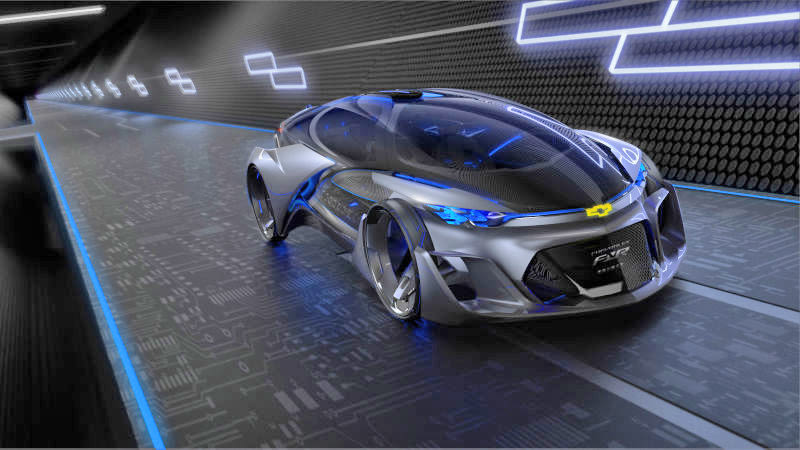

I'm a fan of food and eating in general, so cooking seemed like a no brainer to learn. At first it was more of just wanting to be self-sustaining. By that I mean, being able to live on my own and not have to need anyone else.
Cooking was an easy skill to take up, since I already knew that I liked food. Slowly over the years I've been learning how to cook. How to pair flavors with each others, what works as a substitute for something else, and how to make simple recipes better with a few ingrediants.
One of those foods that I've made better is Ramen. I've taken regular Ramen noodles and added pickled cabbage, carrot and onion, a fried egg, sauteed ham, a splash of soy size, and green chives. Best bowl of ramen noodles that I have ever had at home.

Technology interest me quite a bit because of the sheer fact that it's the future unfolding in front of us during the present. It's amazing to see that meerly 15 years ago we had phones that actually functioned as calling devices, with very few extra features. It's crazy to think what the world will look like in 15 years from now, filled with autonomous self driving cars, and assistant robots that can think for themselves. I want to be part of that wave of innovation, and not just for the money, but for the chance of being a useful and important figure in the world.

AC/DC FOR LIFE!!!!!!
I am a big fan of Rock. By that I mean 50's, 60's, 70's, 2000's and modern day. From Elvis Presley and Chuck Berry, to The Beatles and The Rolling Stones. From Lynard skynard to Metallica, and Fallout Boy to Kaleo, I love it all.
I just enjoy the energy that is infused into the music and the positive feelings that I feel as I listen to it.